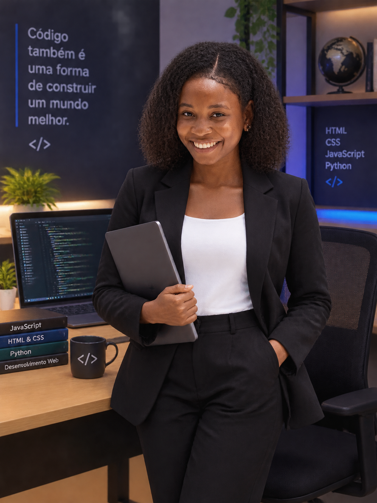

BEM-VINDO(A) AO MEU ESPAÇO
Conhecimento, criatividade e vontade de crescer.
Sou a Leocádia, uma pessoa dedicada à aprendizagem, com formação em Electricidade Instaladora Básica e Informática Básica. Tenho também interesse pelo xadrez, que estimula o meu pensamento estratégico e a concentração.
Conhecer competências
A aprender hoje, a construir o amanhã.
UM POUCO SOBRE MIM
Aprender é construir possibilidades.
Acredito que cada conhecimento adquirido representa uma oportunidade de crescimento. O meu percurso combina conhecimentos técnicos, competências digitais e pensamento estratégico.
Procuro evoluir continuamente, transformar o que aprendo em prática e desenvolver capacidades que me permitam contribuir positivamente para a sociedade.
O QUE APRENDI
As minhas competências
Electricidade Instaladora Básica
Formação básica na área eléctrica, com conhecimentos introdutórios sobre instalações, circuitos e segurança.
Informática Básica
Conhecimentos fundamentais de informática, utilização do computador e contacto com ferramentas digitais.
Xadrez
Um interesse que desenvolve a minha concentração, paciência, capacidade de análise e pensamento estratégico.
O futuro começa com aprendizagem.
O meu objectivo é continuar a adquirir conhecimentos, aperfeiçoar as minhas competências e descobrir novas oportunidades de crescimento pessoal e profissional.
VAMOS CONVERSAR
Contactos
Estou aberta a novas oportunidades, partilha de conhecimentos e aprendizagem.
Enviar e-mail